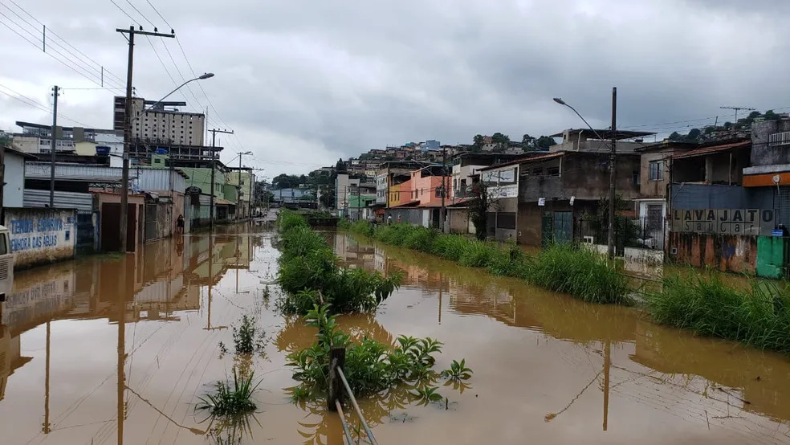
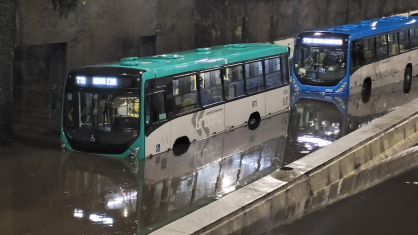

Chuvas causam alagamentos em Juiz de Fora

Fortes chuvas atingiram Juiz de Fora nos últimos dias, provocando diversos pontos de alagamento pela cidade. Ruas ficaram interditadas e moradores enfrentaram dificuldades para se locomover. A Defesa Civil segue monitorando as áreas de risco.
Resgate de pets mobiliza voluntários
Durante os alagamentos em Juiz de Fora, equipes de resgate e voluntários atuaram para salvar animais ilhados. Cães e gatos foram retirados de áreas alagadas e encaminhados para abrigos temporários, garantindo segurança e cuidados veterinários.

Circulação de ônibus sofre alterações
A circulação de ônibus em Juiz de Fora foi parcialmente suspensa em algumas regiões afetadas pelos alagamentos. A prefeitura informou que as linhas estão sendo retomadas gradualmente conforme o nível da água diminui.